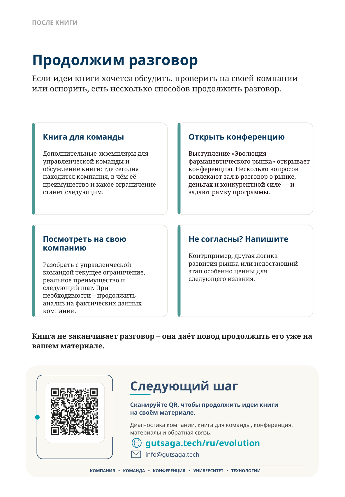

После книги
Продолжим разговор
Если идеи книги хочется обсудить, проверить на своей компании или оспорить, есть несколько способов продолжить разговор.
Книга для команды
Дополнительные экземпляры для управленческой команды и обсуждение книги: где сегодня находится компания, в чём её преимущество и какое ограничение станет следующим.
Открыть конференцию
Выступление «Эволюция фармацевтического рынка» открывает конференцию. Несколько вопросов вовлекают зал в разговор о рынке, деньгах и конкурентной силе — и задают рамку программы.
Посмотреть на свою компанию
Разобрать с управленческой командой текущее ограничение, реальное преимущество и следующий шаг. При необходимости — продолжить анализ на фактических данных компании.
Не согласны? Напишите
Контрпример, другая логика развития рынка или недостающий этап особенно ценны для следующего издания.
Следующий шаг
Сканируйте QR, чтобы продолжить идеи книги на своём материале.
Диагностика компании, книга для команды, конференция, материалы и обратная связь.
gutsaga.tech/ru/evolution
info@gutsaga.tech
